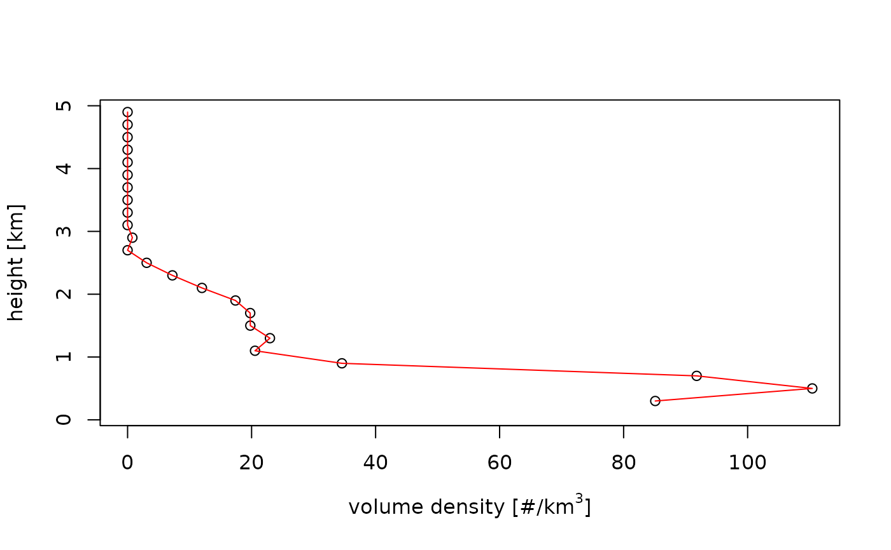
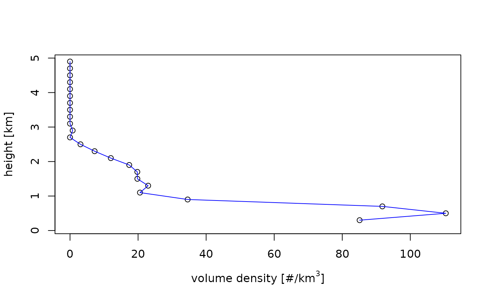
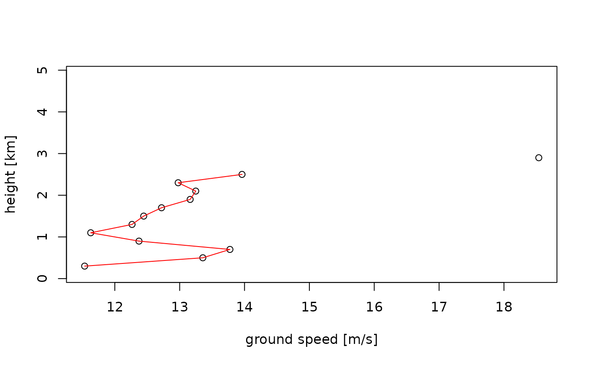

Plot a vertical profile (vp)
Usage
# S3 method for class 'vp'
plot(
x,
quantity = "dens",
xlab = expression("volume density [#/km"^3 * "]"),
ylab = "height [km]",
line_col = "red",
line_lwd = 1,
line.col = "red",
line.lwd = 1,
...
)Arguments
- x
A
vpclass object.- quantity
Character string with the quantity to plot. See vp for list of available quantities.
Aerial density related :
dens,eta,dbz,DBZHfor density, reflectivity, reflectivity factor and total reflectivity factor, respectively.Ground speed related :
ff,dd, for ground speed and direction, respectively.
- xlab
A title for the x axis.
- ylab
A title for the y axis.
- line_col
Color of the plotted curve.
- line_lwd
Line width of the plotted curve.
- line.col
Deprecated argument, use line_col instead.
- line.lwd
Deprecated argument, use line_lwd instead.
- ...
Additional arguments to be passed to the low level plot plotting function.
Examples
# load example vp object:
data(example_vp)
# plot the animal density:
plot(example_vp, quantity = "dens")

# change the line color:
plot(example_vp, line_col = "blue")

# plot the ground speed:
plot(example_vp, quantity = "ff")

# plot the reflectivity factor of
# all scatterers (including precipitation):
plot(example_vp, quantity = "DBZH")